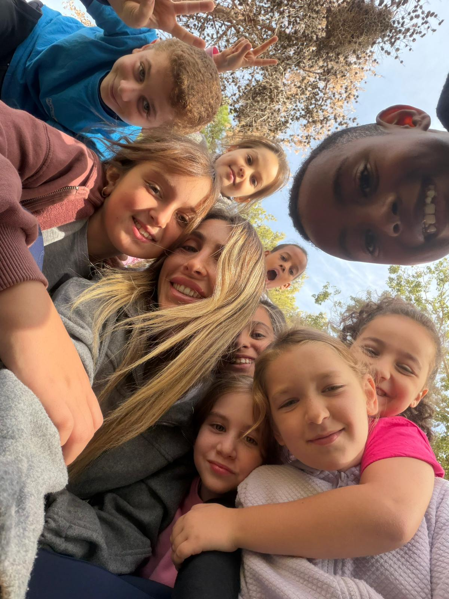
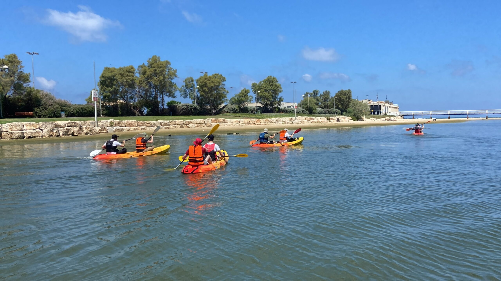
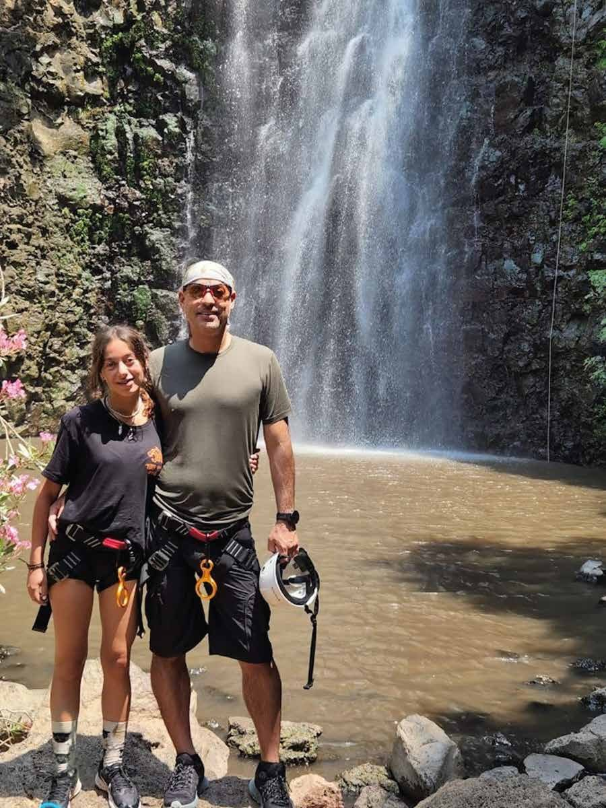
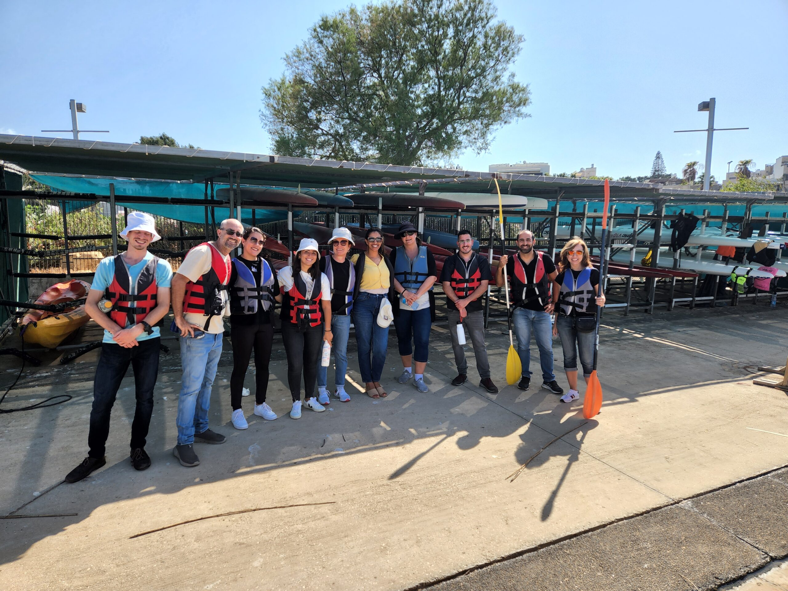
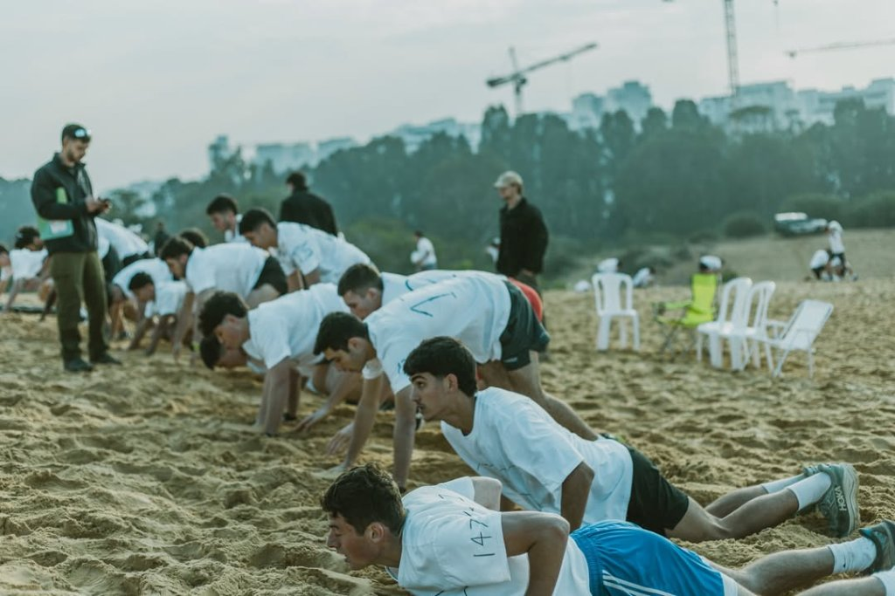
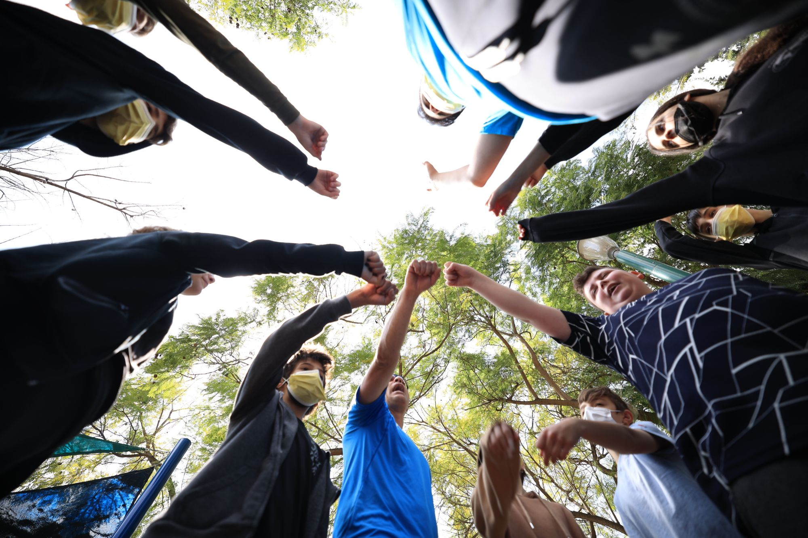

כל ילד צריך מסלול משלו. אנחנו יוצאים איתו לשטח.
ספורט אתגרי, ODT וכלים רגשיים־חברתיים לבתי ספר, לקהילות ולארגונים. מגדרה ובכל הארץ, מאז 2013.
- 2013בשטח מאז



חוויה בשטח שבונה חיבור, חוסן ומנהיגות
לקהילות, לחברות ולארגונים, לבתי ספר ולבני נוער. כל תוכנית נבנית לפי האנשים, הגילאים והמטרות שמולנו.

תוכניות ומיזמים בקהילה
תוכניות שייכות ומעורבות לבני נוער עם רשויות ומתנ״סים, ומסע הורה וילד שמוציא משפחות יחד לשטח.
לתוכניות בקהילה
ימי גיבוש וסדנאות לחברות וארגונים
יום גיבוש על המים עם קיאקים ו־SUP, ו״בדרכו של ליאב״, חוויית שטח לצוותים ולמשלחות. הכול נבנה סביב המטרות של הארגון.
לימי הגיבוש 03 · יסודי עד תיכוןתוכניות חינוכיות בבתי ספר
תוכניות שבועיות וסדנאות, מספורט אתגרי ועד כלים רגשיים־חברתיים, בתוך מערכת השעות.
לתוכניות לבתי ספר
הכנה לשירות משמעותי – צוות אלוש
מיזם הנצחה ערכי חינוכי לזכרו של רס״ל ליאב אלוש ז״ל: כושר קרבי והכנה ליום סיירות ולגיבושים.
לצוות אלושמאמינים בכל אחד ואחת, ויוצאים יחד לשטח
עמותת מסלול חדש פועלת מאז 2013. אנחנו מוציאים אנשים מהשגרה אל השטח: ילדים ובני נוער, משפחות, קהילות וצוותי עבודה. ומחזירים אותם עם ביטחון, חיבור וכלים לחיים. כל תוכנית משלבת ספורט אתגרי, פעילות בטבע ושיחה אמיתית, ונבנית סביב האנשים שמולנו.
בקהילה אנחנו מובילים תוכניות עם רשויות ומתנ״סים, את מסע הורה וילד ואת צוות אלוש לזכרו של ליאב אלוש ז״ל. לחברות ולארגונים אנחנו מפיקים ימי גיבוש וסדנאות בטבע ועל המים. ובבתי הספר אנחנו פועלים בתוכניות מאושרות משרד החינוך. לבחור, להאמין, להצליח.
- ניסיון של יותר מעשור עם רשויות, ארגונים ובתי ספר
- מאמנים ומנחים מוסמכים, אנשי חינוך, טיפול וספורט
- ספק מורשה של משרד הביטחון ותוכנית מאושרת משרד החינוך

ליווי מהמיפוי ועד התוצאה
אותו תהליך חוזר בכל תוכנית, ומותאם לגודל ולמטרות של כל מסגרת.
מיפוי צרכים
פגישת היכרות עם הצוות החינוכי או הארגוני כדי להבין את המטרות.
בניית תוכנית
התאמת היקף, תכנים ושלבים למסגרת הספציפית.
הפעלה בשטח
מפגשים שבועיים או ימי שיא, בליווי צוות מדריכים מקצועי.
הערכה ומעקב
תצפיות ומשובים מהצוות החינוכי לאורך הדרך ובסיומה.
מה נשאר אחרי שחוזרים מהשטח
קולות מבתי ספר, מקהילות ומארגונים שיצאו איתנו לשטח.
פרויקט הריצה לימד אותי הרבה יותר מריצה. הוא חיזק את הביטחון העצמי שלי, את היכולות שלי ואת הרצון להצליח.
חוויה מעצימה ומחברת שפתחה לנו את הלב, חיזקה את הצוות והזכירה כמה כוח יש בעשייה משותפת.
הקשיבו לנו, התאימו את התוכן לקבוצה ויצרו יום עם אדרנלין ועם מקום לדבר, לצחוק ולהתחבר. העובדים כבר ביקשו עוד אחד.
חיפשתי זמן איכות אמיתי עם הבת שלי, בלי טלפונים ובלי הסחות. יצאנו יחד למשימות, צחקנו, התאמצנו, ובלילה ישבנו מתחת לכוכבים ודיברנו כמו שלא דיברנו הרבה זמן. חזרנו הביתה קרובים יותר.
פועלים בשיתוף
מתאימים לבית הספר, לקהילה או לארגון שלכם?
ספרו לנו על הקבוצה, ונבנה יחד את התוכנית הנכונה. נחזור אליכם תוך יום עבודה.
- רולי חדש, מנכ״ל054-4221337
- רונן054-4225112
- מיילnewmaslul@gmail.com
- כתובתפנינה 8, גדרה